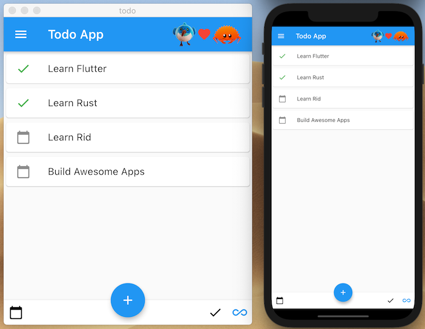

Multithreaded Todo App

👉 Read the source of this example as part of the rid examples repo.
👉 Get started with Rid and learn about its architecture.
Screencast
Here we are use Rid to easily integrate Rust with Flutter via simple annotations and demonstrate the easy to use yet memory safe API to your Rust code which our Bloc/Cubits can leverage.
Walkthrough
Make sure to check back for step by step instructions on how to build this application.
Sponsors get early access.
Older Screencast of Single Threaded Todo App
Some of the API used is now obsolete and all apps now use the Message/Reply pattern instead of expecting Store updates to complete synchronously.
However it is still an interesting watch if you want to understand more about how Rid works and how it evolved.